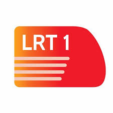
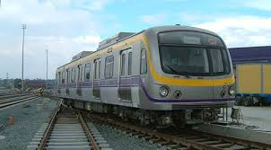
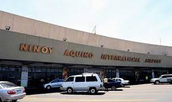

The Manila Metro Rail Transit System also known as the MRT Line 3, MRT-3 or Metrostar Express is a rapid transit system of Metro Manila, Philippines.
The line is owned by the Metro Rail Transit Corporation (MRTC), a private company operating in partnership with the DOTr under a Build-Lease-Transfer agreement.
The rails are mostly elevated and erected either over or along the roads covered, with sections below ground before and after Buendia and Ayala stations, the only underground stations on the line. The southern terminus of the line is the Taft Avenue station at the intersection between Epifanio de los Santos Avenue and Taft Avenue, while the northern terminus is the North Avenue station along Epifanio de los Santos Avenue in Barangay Bagong Pag-asa, Quezon City. The rail line serves the cities that Circumferential Road 4 (Epifanio de los Santos Avenue) passes through: Pasay, Makati, Mandaluyong, San Juan and Quezon City.

The Manila Light Rail Transit System Line 1 is the first metro line of the Manila Light Rail Transit System.
The line runs in a general north-south direction from Baclaran to Monumento; then, it runs in an east-west direction from Monumento to North Avenue, linking the cities of Quezon City, Caloocan, Manila, Pasay, and Parañaque. Passengers can transfer to the Line 2 at Doroteo Jose station, while passengers can transfer to the Line 3 at EDSA and North Avenue stations.

LRT-2 is integrated with the public transit system in Metro Manila, and passengers also take various forms of road-based public transport, such as buses and jeepneys, to and from a station to reach their intended destination.
Although operated by the Light Rail Transit Authority, resulting in its being called "LRT-2", it is actually a heavy rail, rapid transit system owing to its use of electric multiple units instead of the light rail vehicles used in earlier lines and is the only line utilizing such type of system in the country.
The rail line serves the cities that Radial Road 6 (Marcos Highway, Aurora Boulevard, Ramon Magsaysay Boulevard, Legarda Street and Recto Avenue) passes through: Manila, San Juan, Quezon City, Marikina City and Pasig City (depot).
The Philippine National Railways (PNR) is a state-owned railway company in the Philippines, operating a single line of track on Luzon.
PNR began operations on November 24, 1892 as the Ferrocarril de Manila-Dagupan, during the Spanish colonial period, and later becoming the Manila Railroad Company (MRR) during the American colonial period.
The Metro Commuter (also known by the remaining active service MSC or Metro South Commuter), which was formerly called Commuter Express (also Commex), serves as the commuter rail service for the Manila metropolitan area, extending as far south as Calamba City, Laguna.

The Ninoy Aquino International Airport, formerly known and still commonly referred to as Manila International Airport as well as its codename Nichols Field (Nichols), is the airport serving Manila and its surrounding metropolitan area.
Located along the border between the cities of Pasay and Parañaque, about 7 kilometres (4.3 mi) south of Manila proper and southwest of Makati, NAIA is the main international gateway for travelers to the Philippines and serves as a hub for AirAsia Philippines, Cebgo, Cebu Pacific, PAL Express, and Philippine Airlines. It is managed by the Manila International Airport Authority (MIAA), a branch of the Department of Transportation (DOTr).